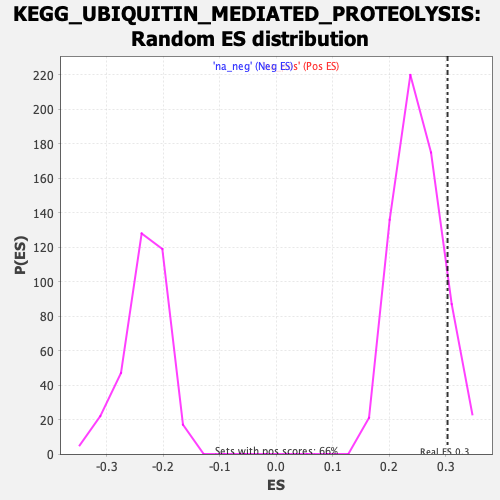

| | | Dataset | PFS |
| Phenotype | NoPhenotypeAvailable |
| Upregulated in class | na_pos |
| GeneSet | KEGG_UBIQUITIN_MEDIATED_PROTEOLYSIS |
| Enrichment Score (ES) | 0.30343208 |
| Normalized Enrichment Score (NES) | 1.2103047 |
| Nominal p-value | 0.11782477 |
| FDR q-value | 0.98522156 |
| FWER p-Value | 1.0 |
Table: GSEA Results Summary
 Fig 1: Enrichment plot: KEGG_UBIQUITIN_MEDIATED_PROTEOLYSIS
Fig 1: Enrichment plot: KEGG_UBIQUITIN_MEDIATED_PROTEOLYSIS
Profile of the Running ES Score & Positions of GeneSet Members on the Rank Ordered List
| SYMBOL | RANK IN GENE LIST | RANK METRIC SCORE | RUNNING ES | CORE ENRICHMENT | | 1 | UBE2C | 113 | 4.993 | 0.0349 | Yes |
| 2 | PIAS3 | 252 | 4.127 | 0.0614 | Yes |
| 3 | ERCC8 | 518 | 3.278 | 0.0744 | Yes |
| 4 | ANAPC2 | 531 | 3.250 | 0.1003 | Yes |
| 5 | UBE2W | 735 | 2.903 | 0.1135 | Yes |
| 6 | KLHL13 | 859 | 2.734 | 0.1294 | Yes |
| 7 | UBE2J2 | 882 | 2.713 | 0.1504 | Yes |
| 8 | FZR1 | 931 | 2.656 | 0.1695 | Yes |
| 9 | KEAP1 | 1225 | 2.352 | 0.1736 | Yes |
| 10 | UBE2E2 | 1396 | 2.211 | 0.1828 | Yes |
| 11 | UBA6 | 1586 | 2.094 | 0.1902 | Yes |
| 12 | NEDD4 | 1830 | 1.957 | 0.1936 | Yes |
| 13 | TRIM37 | 2108 | 1.806 | 0.1940 | Yes |
| 14 | UBE2Q2 | 2316 | 1.720 | 0.1974 | Yes |
| 15 | SOCS1 | 2462 | 1.655 | 0.2034 | Yes |
| 16 | CBL | 2528 | 1.625 | 0.2133 | Yes |
| 17 | HERC4 | 2553 | 1.615 | 0.2252 | Yes |
| 18 | HERC2 | 2586 | 1.603 | 0.2366 | Yes |
| 19 | UBE2E1 | 2863 | 1.492 | 0.2345 | Yes |
| 20 | TRIP12 | 2902 | 1.479 | 0.2446 | Yes |
| 21 | FBXW8 | 2958 | 1.461 | 0.2537 | Yes |
| 22 | PRPF19 | 3048 | 1.429 | 0.2607 | Yes |
| 23 | FBXO2 | 3221 | 1.374 | 0.2631 | Yes |
| 24 | NHLRC1 | 3275 | 1.358 | 0.2714 | Yes |
| 25 | BIRC6 | 3386 | 1.327 | 0.2765 | Yes |
| 26 | CDC16 | 3467 | 1.304 | 0.2830 | Yes |
| 27 | CUL4A | 3551 | 1.272 | 0.2891 | Yes |
| 28 | SMURF1 | 3808 | 1.202 | 0.2857 | Yes |
| 29 | BIRC3 | 3992 | 1.148 | 0.2857 | Yes |
| 30 | UBA1 | 4040 | 1.136 | 0.2925 | Yes |
| 31 | XIAP | 4125 | 1.116 | 0.2973 | Yes |
| 32 | FANCL | 4180 | 1.100 | 0.3034 | Yes |
| 33 | CDC20 | 4407 | 1.048 | 0.3003 | No |
| 34 | DDB1 | 4782 | 0.958 | 0.2888 | No |
| 35 | UBE2J1 | 4979 | 0.922 | 0.2863 | No |
| 36 | SOCS3 | 5230 | 0.870 | 0.2804 | No |
| 37 | UBE2S | 5245 | 0.866 | 0.2868 | No |
| 38 | RCHY1 | 5712 | 0.775 | 0.2691 | No |
| 39 | AIRE | 5830 | 0.756 | 0.2692 | No |
| 40 | RNF7 | 5875 | 0.748 | 0.2730 | No |
| 41 | HUWE1 | 5897 | 0.744 | 0.2780 | No |
| 42 | UBE2H | 5994 | 0.725 | 0.2790 | No |
| 43 | UBA7 | 6393 | 0.650 | 0.2637 | No |
| 44 | BRCA1 | 6650 | 0.609 | 0.2555 | No |
| 45 | HERC3 | 6752 | 0.593 | 0.2551 | No |
| 46 | SKP1 | 6765 | 0.591 | 0.2593 | No |
| 47 | UBE2G1 | 6798 | 0.585 | 0.2624 | No |
| 48 | UBA2 | 7038 | 0.544 | 0.2545 | No |
| 49 | TRIM32 | 7069 | 0.538 | 0.2574 | No |
| 50 | ANAPC4 | 7140 | 0.526 | 0.2581 | No |
| 51 | PIAS2 | 7227 | 0.511 | 0.2578 | No |
| 52 | CUL2 | 7412 | 0.483 | 0.2522 | No |
| 53 | UBE2Z | 7436 | 0.479 | 0.2549 | No |
| 54 | UBE2QL1 | 7535 | 0.463 | 0.2537 | No |
| 55 | RBX1 | 7869 | 0.410 | 0.2398 | No |
| 56 | WWP1 | 8043 | 0.385 | 0.2341 | No |
| 57 | ANAPC11 | 8289 | 0.353 | 0.2243 | No |
| 58 | UBE2D3 | 8312 | 0.349 | 0.2260 | No |
| 59 | UBE2D1 | 8643 | 0.303 | 0.2115 | No |
| 60 | WWP2 | 8659 | 0.300 | 0.2131 | No |
| 61 | UBE2U | 8679 | 0.298 | 0.2146 | No |
| 62 | ANAPC5 | 8732 | 0.290 | 0.2143 | No |
| 63 | ITCH | 8882 | 0.266 | 0.2087 | No |
| 64 | CUL7 | 8986 | 0.252 | 0.2055 | No |
| 65 | UBE3C | 8993 | 0.252 | 0.2072 | No |
| 66 | UBE4B | 9018 | 0.247 | 0.2080 | No |
| 67 | UBA3 | 9045 | 0.243 | 0.2086 | No |
| 68 | UBE3A | 9166 | 0.226 | 0.2043 | No |
| 69 | MAP3K1 | 9215 | 0.219 | 0.2036 | No |
| 70 | ANAPC1 | 9286 | 0.209 | 0.2017 | No |
| 71 | ANAPC7 | 9291 | 0.208 | 0.2032 | No |
| 72 | BTRC | 9315 | 0.206 | 0.2037 | No |
| 73 | MGRN1 | 9427 | 0.188 | 0.1995 | No |
| 74 | SMURF2 | 9548 | 0.169 | 0.1947 | No |
| 75 | PIAS1 | 9607 | 0.160 | 0.1930 | No |
| 76 | CUL1 | 9729 | 0.143 | 0.1879 | No |
| 77 | FBXW7 | 9825 | 0.127 | 0.1841 | No |
| 78 | UBE2K | 10516 | 0.032 | 0.1487 | No |
| 79 | CBLC | 10576 | 0.023 | 0.1459 | No |
| 80 | BIRC2 | 10678 | 0.008 | 0.1407 | No |
| 81 | UBR5 | 10730 | 0.001 | 0.1381 | No |
| 82 | UBE2M | 10807 | -0.010 | 0.1343 | No |
| 83 | ANAPC10 | 10986 | -0.035 | 0.1254 | No |
| 84 | CUL4B | 11010 | -0.038 | 0.1245 | No |
| 85 | MDM2 | 11017 | -0.038 | 0.1245 | No |
| 86 | ANAPC13 | 11153 | -0.056 | 0.1180 | No |
| 87 | UBE2L3 | 11177 | -0.059 | 0.1173 | No |
| 88 | UBE2E3 | 11367 | -0.087 | 0.1083 | No |
| 89 | UBE2D2 | 11398 | -0.092 | 0.1075 | No |
| 90 | UBE2N | 11426 | -0.096 | 0.1069 | No |
| 91 | UBE4A | 11451 | -0.099 | 0.1064 | No |
| 92 | CUL5 | 11955 | -0.176 | 0.0819 | No |
| 93 | UBE2R2 | 11984 | -0.182 | 0.0820 | No |
| 94 | CBLB | 12049 | -0.191 | 0.0802 | No |
| 95 | HERC1 | 12189 | -0.211 | 0.0748 | No |
| 96 | UBE2Q1 | 12357 | -0.236 | 0.0681 | No |
| 97 | CUL3 | 12798 | -0.310 | 0.0479 | No |
| 98 | PIAS4 | 12809 | -0.312 | 0.0500 | No |
| 99 | SYVN1 | 12895 | -0.327 | 0.0482 | No |
| 100 | UBE2A | 13098 | -0.361 | 0.0408 | No |
| 101 | SKP2 | 13614 | -0.444 | 0.0178 | No |
| 102 | DDB2 | 13623 | -0.445 | 0.0210 | No |
| 103 | DET1 | 13738 | -0.466 | 0.0190 | No |
| 104 | CDC27 | 13815 | -0.482 | 0.0190 | No |
| 105 | TRAF6 | 14004 | -0.517 | 0.0135 | No |
| 106 | UBE2D4 | 14085 | -0.532 | 0.0137 | No |
| 107 | CDC34 | 14272 | -0.566 | 0.0087 | No |
| 108 | SAE1 | 14336 | -0.577 | 0.0102 | No |
| 109 | FBXW11 | 14468 | -0.603 | 0.0084 | No |
| 110 | UBE2I | 14550 | -0.619 | 0.0092 | No |
| 111 | CDC26 | 14710 | -0.655 | 0.0064 | No |
| 112 | STUB1 | 14733 | -0.661 | 0.0106 | No |
| 113 | UBE2B | 14849 | -0.686 | 0.0103 | No |
| 114 | PPIL2 | 14933 | -0.703 | 0.0117 | No |
| 115 | RHOBTB2 | 14941 | -0.705 | 0.0171 | No |
| 116 | CDC23 | 14975 | -0.712 | 0.0212 | No |
| 117 | UBE2F | 15473 | -0.827 | 0.0023 | No |
| 118 | VHL | 15910 | -0.948 | -0.0124 | No |
| 119 | NEDD4L | 16194 | -1.034 | -0.0186 | No |
| 120 | UBE2NL | 16303 | -1.069 | -0.0155 | No |
| 121 | UBE2G2 | 17032 | -1.339 | -0.0421 | No |
| 122 | SIAH1 | 17262 | -1.437 | -0.0422 | No |
| 123 | UBOX5 | 17416 | -1.509 | -0.0378 | No |
| 124 | UBE2O | 18057 | -1.893 | -0.0554 | No |
| 125 | KLHL9 | 18086 | -1.913 | -0.0412 | No |
| 126 | UBE2L6 | 18251 | -2.046 | -0.0330 | No |
| 127 | MID1 | 18566 | -2.358 | -0.0300 | No |
| 128 | PML | 19058 | -3.057 | -0.0304 | No |
| 129 | UBE3B | 19090 | -3.118 | -0.0066 | No |
| 130 | FBXO4 | 19235 | -3.548 | 0.0149 | No |
Table: GSEA details [plain text format]

Fig 2: KEGG_UBIQUITIN_MEDIATED_PROTEOLYSIS: Random ES distribution
Gene set null distribution of ES for KEGG_UBIQUITIN_MEDIATED_PROTEOLYSIS